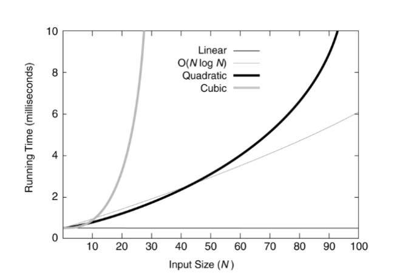
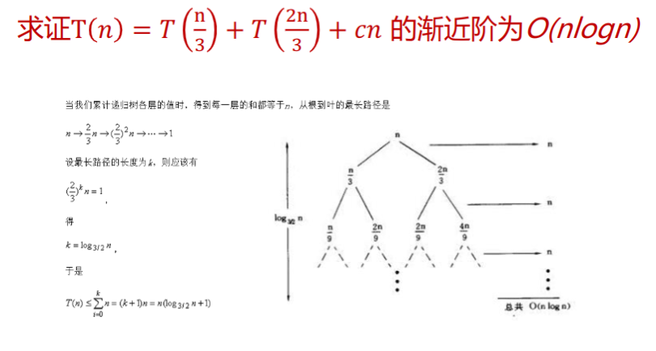

算法导论
算法
算法是指解决问题的一种方法或者一个过程。
算法是若干指令的有穷序列：
- 输入
- 输出
- 确定性
- 有限性
算法的时间复杂度分析
渐进性原理及表示符号
使用渐进性原理对于算法的时间复杂度进行分析，反映算法的时间复杂度随着变化发生变化的情况，衡量了算法的规模。
使用渐进分析的专用记号对于渐进性进行分析：
- 渐进上界记号
- 渐进下界记号
- 非紧上界记号
- 非紧下界记号
- 紧渐进界记号
渐进分析中中的符号类似于比较：
同时渐进分析记号还具有若干性质：
-
传递性
-
反身性
-
对称性
-
互对称性
-
支持算术运算
在算法中存在这些常见的复杂性函数：
| 函数 | 名称 |
|---|---|
| 常数 | |
| 对数 | |
| 对数平方 | |
| 线性 | |
| 平方 | |
| 立方 | |
| 指数 |
对于小规模的数据，这些复杂性函数的图像：

对于较大规模的数据，则图像为：

递归方程渐进阶的求解
代入法
先推测递归方法的显式解，然后使用数学归纳法证明这一推测的正确性。
例： 求证的渐进阶。
首先，推测， 即存在正的常数和自然数，使得当时： 假设当，是，上面的推论成立，那么当时，有： \[ \begin{eqnarray} T(n) &=& 2T(\lfloor \frac{n}{2} \rfloor) + n \ &\le& 2 C \lfloor \frac{n}{2} \rfloor log(\lfloor \frac{n}{2} \rfloor) + n \ &<& 2C\frac{n}{2} log(\frac{n}{2}) + n \ &=& Cnlogn - Cn + n \ &=& Cnlogn - (c-1)n \ &\le& Cnlogn \end{eqnarray} \] 原假设成立。
迭代法
迭代展开递归方程的右端，使之成为一个非递归的合式，然后通过对合式的估计来达到对于方程左端解的估计。
例：求 的渐进阶。 \[ \begin{eqnarray} T(n) &=& 2T(\frac{n}{2}) + 5n^2 \ &=& 2(2T(\frac{n}{4}) + 5(\frac{n}{2}))^2 + 5n^2 \ &=& 2(2(2T(\frac{n}{8}) + 5 (\frac{n}{4}) ^ 2) + 5(\frac{n}{2}))^2 + 5n^2 \ &=& 2^kT(1) + 2^{k-1} 5(\frac{n}{2^{k-1}}) ^ 2 + \cdots + 2 \times 5 (\frac{n}{2})^2 + 5n^2 \end{eqnarray} \] 不难发现： 迭代法还有一个衍生的方法——递归树法：

实际上就是使用树的方式表示整个递推公式。

套用公式法
针对如下的递推方程 我们有 这个公式还有一般化的情况：
如果递归方程的形式为： 则针对进行讨论：
-
如果, 使得，那么我们有
-
如果，那么我们有
-
如果，使得，且当时，当充分大时有，那么我们有
母函数法
通用的方法总是复杂的。
设是任意的数列，那么称下面这个函数为数列的母函数： 如果数列是算法的复杂性函数，则其母函数为： 如果能由也就是的数列的递归方程求出母函数，那么其第项系数为。